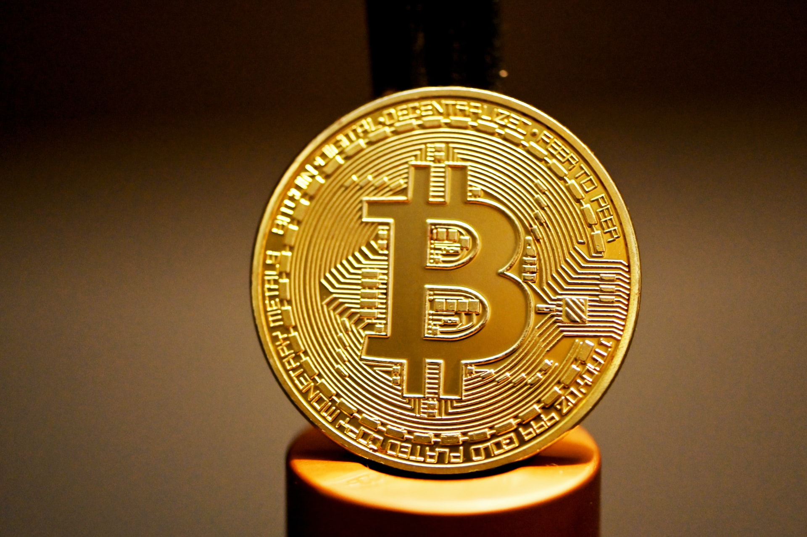

The price of Bitcoin has increased by 36% in the last 35 days, showing a strong rally. The market sentiment has been optimistic due to rising institutional demand and the perception of BTC as an inflation hedge.
But after a large uptrend, the belief that BTC may pull back has begun to increase. While a minor correction could occur, like the 4% downward trip to just under $13,000 on Oct. 28, a sizable downtrend is becoming increasingly unlikely. Bitcoin was at $13,860 at the day’s peak, which marked the top of the July 2019 rally. After hitting such a resistance area, a minor pullback is expected. Following a drop to below $13,000, BTC has quickly recovered to $13,150, demonstrating resilience.
Throughout the past 11 years, Bitcoin price has moved in cycles. One of the most prominent narratives, among many others, is the block reward halving, where roughly every four years, the Bitcoin blockchain cuts in half the amount of BTC mined. The halving slows down the pace at which new BTC is created, causing its overall circulating supply to decrease over time. The year following every halving, BTC has rallied strongly, as seen in December 2017 when BTC hit $20,000, subsequent to the July 2016 halving.
If a similar pattern follows, the price of Bitcoin will likely hit $20,000 in March 2021, an analyst known as Ceteris Paribus said. “For $BTC to match last cycle’s time to regain all time high, it would need to hit $20k on March 11, 2021. Would be kind of poetic for it to happen a year after (arguably) the most infamous day in bitcoin’s history.” As such, analysts anticipate the road to $20,000 in the medium term to be met with obstacles and minor corrections.
During a bull cycle, the biggest threat to an uptrend is a potential sell-off from long-time hodlers and whales. Before the sell-off happens, some on-chain indicators could show an intent to sell. The most widely used indicator to gauge seller activity is exchange inflows.
When whales prepare to sell Bitcoin, they typically transfer their BTC holdings to exchanges. On some occasions, if a high net worth individual is dealing with extremely large BTC holdings, then they might engage in trades on OTC markets. But in most cases, whales use exchanges like Coinbase, Gemini and Binance. As such, when inflows to major exchanges increase, it often suggests the selling pressure on BTC might intensify.
With no large selling pressure coming from whales on exchanges, derivatives traders have explained that the ongoing rally is spot-led, not futures-driven. This differentiation is critical because when a rally is primarily fueled by the futures market, it could raise the probability of a rapid pullback. The reason behind this tendency is the possibility of cascading liquidations.
On a Bitcoin futures exchange, cryptocurrency traders place short or long positions with leverage. But that also indicates that if BTC drops 10%, the position would get liquidated and the trader would lose the base capital of $10,000. When the futures market drives the rally and a small drop rattles traders, it could cause a cascade of long futures contracts, causing the market to drop.
The recent rally, however, has seen significant demand from spot and institutional markets. “Light,” a pseudonymous Bitcoin derivatives trader, said, “Market structure is distributed with no exchange monopolizing price discovery. spot is leading derivatives. make of that what you will.”
Lastly, the staircase rally of Bitcoin supports the argument that a large price drop has become less likely. In December 2017, Bitcoin crashed after reaching $20,000 because the uptrend occurred in a short period, so there was not enough time to establish support and resistance levels. This time, BTC is climbing a staircase, consolidating after each rally. Such a technical pattern strengthens the uptrend and uplifts the overall momentum.
" Overall social volume is also rising, indicating higher than normal FOMO levels. "
Still, there are two key reasons why traders anticipate a short-term Bitcoin downtrend. First, the U.S. dollar index (DXY) has been rebounding. Since alternative stores of value, including gold and Bitcoin, are priced against the dollar, the recovery of the DXY could negatively affect BTC. Second, Bitcoin market sentiment is demonstrating FOMO-level excitement — the fear of missing out — which raises concerns of an overheated rally.
Bitcoin traders Michael van de Poppe and Nick Cote both emphasized that the rising DXY could be a problem for BTC in the near term. Van de Poppe, a full-time trader at the Amsterdam Stock Exchange and a Cointelegraph contributor, said that $12,700 remains a potential target if the DXY continues to climb.
Researchers at Santiment also emphasized that the “social mood” of the Bitcoin market has been increasing quickly. Marking a positive factor in the long term, in the foreseeable future it raises the chances of an overheated rally. If so, the derivatives market could begin to get overcrowded and whales could ponder taking profit on their positions: “Overall social volume is also rising, indicating higher than normal FOMO levels.”